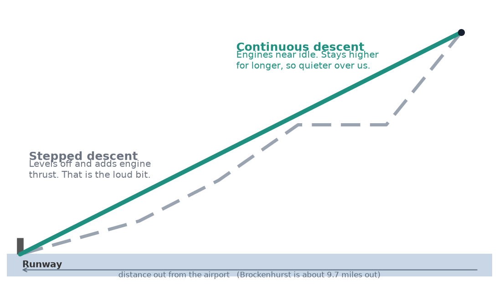
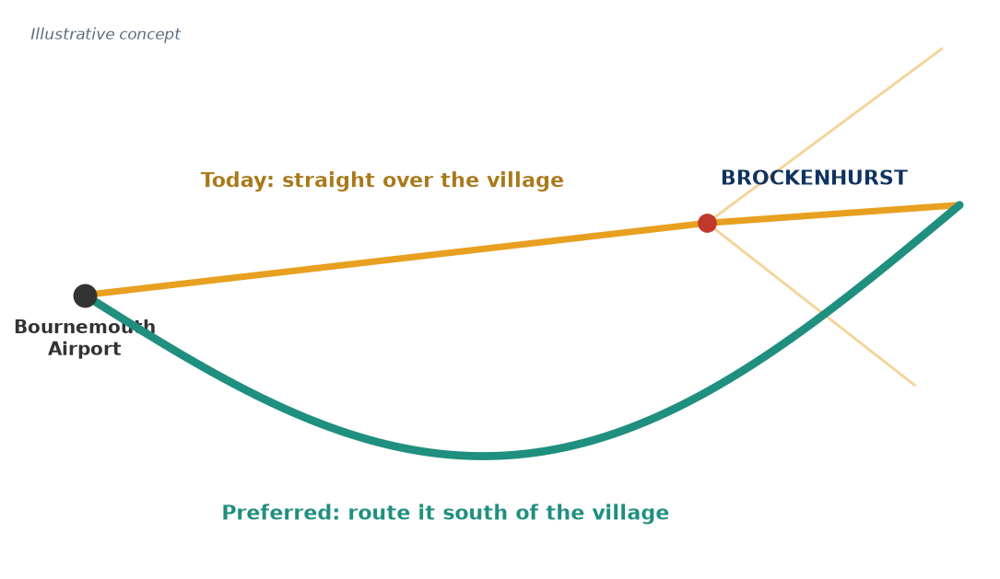

A residents' case pack on Bournemouth Airport arrivals, built entirely on the aircraft's own public flight data, 2023 to 2025.
The problem
The situation is already unbearable for many, and it is getting worse.
We are not against aircraft, nor the expansion of Bournemouth Airport, but the rising noise is a real concern and we want to work with the authorities to reduce it, without harming others or the airport. Many residents can no longer fully enjoy their homes and gardens, and families are woken by late-night flights.
Brockenhurst sits just under 10 nautical miles out, directly in line with the main runway. Flights from the north, east and south are funnelled together and join the landing line right by the village, often lower than the airport's own rules and turning and levelling off overhead, which is the loud bit.
Every arrival over three years, drawn from each aircraft's own GPS. Flights from the north, east and south converge onto the landing line just west of Brockenhurst. Each blue line is one flight's path.
+65%
More large jets
in three years (28% more arrivals)
77%
Arrivals flying too low
below the quiet-descent height
+137%
More night flights
after-11pm arrivals have more than doubled
75%
Residents concerned
from a poll of 270 residents
Brockenhurst Community Action Group · Aircraft Noise Mitigation1
What we can do
Can we do anything about this? Yes, and the time is now.
Bournemouth Airport is redrawing its flight paths right now, through the formal CAA process. The new satellite-guided routes are hyper precise: instead of today's scattered flights, aircraft will follow the exact same line. If that line is drawn over Brockenhurst, it becomes a permanent noise highway. That is the threat, and also the opportunity to move it.
What we are asking for
1. Continuous descent, and stay higher

The most efficient landing is one smooth glide with the engines near idle. It keeps aircraft higher for longer, and quieter. Levelling off, the stepped approach, needs extra thrust and is the loud bit.
2. Avoid Brockenhurst

Use the precision of the new satellite routes to place the line away from the village, for example routed to the south, without shifting the burden onto other communities.
3. No fixed noise corridor. Keep the design simple, but do not lock every flight onto one line. Vary the routes so that no single area carries all the impact, day after day.
The law is on our side. The airport has a Section 106 commitment to continuous descent, and a duty under the Levelling Up and Regeneration Act 2023 to further the National Park's purposes, putting conservation first.
Get involved, it makes a difference
Your voice genuinely counts.
In the past, Brockenhurst residents did not take part in the consultation, and the flights came our way. This time can be different.
Join the campaign
Get on the Aircraft Noise group. Email aircraft@yourbrockenhurst.org
Complain when disturbed
Every complaint is logged. Email environment@bournemouthairport.com with the flight and time.
Understand and share
Read this, tell your neighbours, and take part when the consultation opens.
Brockenhurst Community Action Group · aircraft@yourbrockenhurst.org2